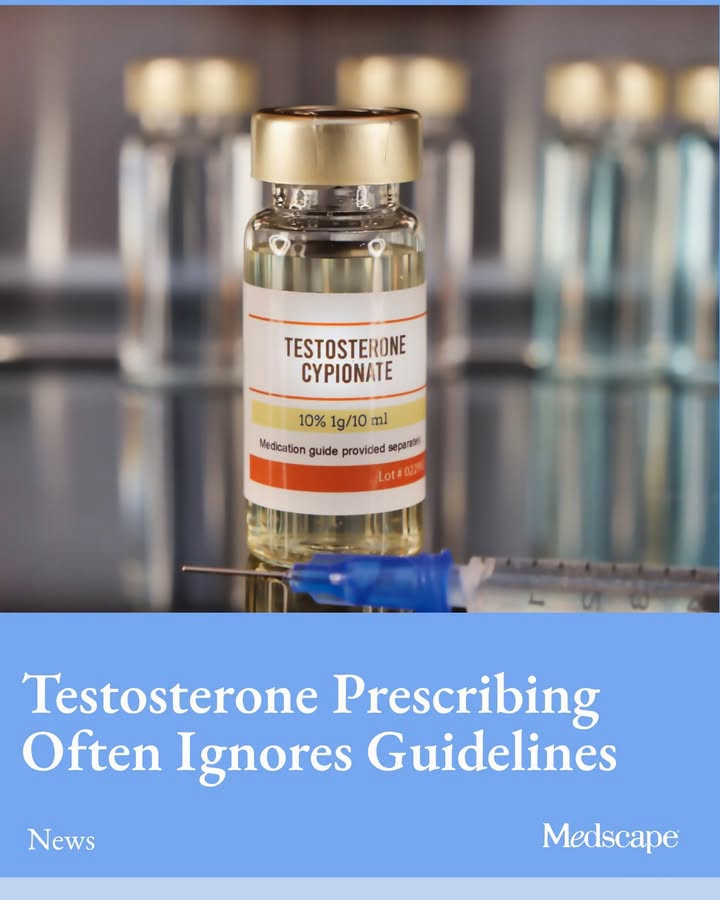

He hasn’t exactly been fully transparent about his pharmaceutical use of testosterone.
(What a shock.)
Louis comments sarcastically on a post saying a well-known podcaster confirmed using testosterone replacement therapy since age 45. This is celebrity news with no research content.
He hasn’t exactly been fully transparent about his pharmaceutical use of testosterone.
(What a shock.)
Andrew Huberman confirmed during a podcast interview with six-time Mr. Olympia Dorian Yates that he has been using testosterone replacement therapy since the age of 45.
The neuroscientist built one of the largest health optimization platforms in the world over the past several years.
His protocols covered sleep architecture, supplementation systems, cold exposure, light exposure timing, and hormone regulation frameworks designed to help everyday people maximize natural performance.
Millions of followers adopted those systems with the understanding that the person teaching them was operating within the same natural parameters.
The TRT admission changes the context of that relationship between educator and audience.
Testosterone replacement therapy is a legitimate medical intervention used by millions of men under clinical supervision.
There is nothing inherently problematic about TRT as a tool for maintaining health and performance as hormone levels naturally decline with age.
The conversation is not about the therapy itself.
The conversation is about what happens when the image projected to an audience does not fully reflect the interventions being used behind the scenes.
When a health authority builds a platform around natural optimization and does not clearly disclose a significant pharmacological intervention, it raises questions about the standards the industry applies to its most visible voices.
This is not unique to one individual.
The fitness and health space has navigated transparency challenges for decades.
Athletes, coaches, and influencers routinely walk the line between what they disclose publicly and what they keep private.
The question is whether audiences have a right to full context when the person providing guidance is operating under different conditions than the ones being recommended.
Performance systems are built on trust.
Training protocols, recovery frameworks, and supplementation strategies carry weight only when the surrounding context is honest and complete.
Huberman stated during the interview that he takes approximately 125 milligrams per week and considers himself to have been open about it.
Many followers have pushed back on that characterization, arguing the disclosure was not prominent enough relative to the platform's reach and influence.
The broader fitness community remains divided on where the line should be drawn.
Some argue that TRT is a personal medical decision that does not invalidate the underlying science of the protocols shared.
Others believe that full disclosure is a baseline requirement for anyone operating in the health optimization space.
Both positions carry merit and reflect a larger conversation about accountability in modern health media.
The standard for transparency in the fitness industry may need to evolve alongside the platforms that shape public health decisions.

Louis shares a preprint reported by Science in which neutering older male mice lengthened life by more than 30%, even when done in adulthood. He argues this undermines claims that raising testosterone in older men is anti-aging, noting no randomized trial shows benefit in men without clinical hypogonadism. It is mouse preprint data, not a human option.

Louis notes concern about a new policy to screen service members over 30 for low testosterone. Barbell Medicine states about one in eighteen men aged 30-79 has true deficiency, about a third of low readings are wrong on retest, and screening healthy men leads to unnecessary treatment.

Menno Henselmans explains that studies show GLP-1 drugs improve testosterone and sperm measures, but the effect is likely due to fat loss, since fat cells convert testosterone to estrogen via aromatase.

Louis shares a Medscape report of a University of Michigan single-center study finding that most men prescribed testosterone did not get recommended diagnostic testing, and many had contraindications. Prescriptions have quadrupled in three decades despite stable hypogonadism diagnosis rates. Louis's remark about 'incompetence and greed' is opinion.

Louis shares a small controlled pilot study in obese men with metabolic hypogonadism. Two months of tirzepatide gave greater weight loss and increases in testosterone, LH, FSH and SHBG while lowering estradiol, compared with no treatment or transdermal testosterone.

Louis shares an article saying low testosterone in middle-aged men is often caused by visceral fat, and that around 7-10% weight loss lowers leptin enough to raise testosterone. Semaglutide and other GLP-1 drugs reportedly raise testosterone 20-30% in men with abundant visceral fat.